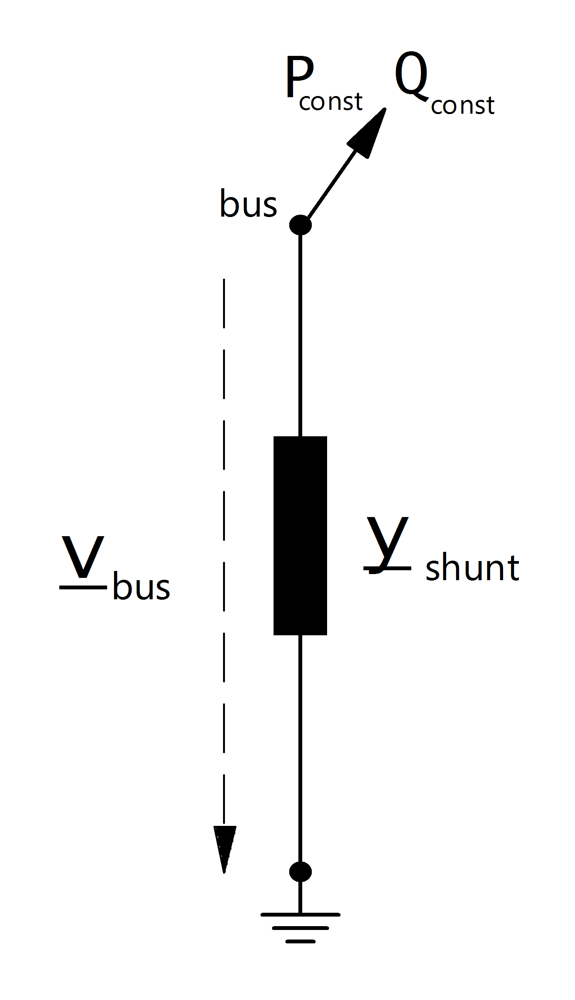

Ward¶
See also
Parameters
net.ward
| Parameter | Datatype | Value Range | Explanation |
| name | string | name of the ward equivalent | |
| bus* | integer | index of connected bus | |
| ps_kw* | float | constant active power demand [kW] | |
| qs_kvar* | float | constant reactive power demand [kVar] | |
| pz_kw* | float | constant impedance active power demand at 1.0 pu [kW] | |
| qz_kvar* | float | constant impedance reactive power demand at 1.0 pu [kVar] | |
| in_service* | boolean | “True” - in service
“False” - out of service
|
specifies if the ward equivalent is in service. Only in service elements are considered during loadflow calculation |
*necessary for executing a loadflow calculation.
Loadflow Model
{kind=link}
The ward equivalent is a combination of a constant apparent power consumption and a constant impedance load. The constant apparent power is given by:
\[\begin{align*}
P_{const} &= ps\_kw\\
Q_{const} &= qs\_kvar\\
\end{align*}\]
The shunt admittance part of the ward equivalent is calculated as described here:
\[\begin{align*}
\underline{y}_{shunt} &= \frac{pz\_kw + j \cdot qz\_kvar}{S_{N}}
\end{align*}\]
Results
net.res_ward
| Parameter | Datatype | Explanation |
| p_kw | float | active power demand of the ward equivalent [kW] |
| q_kvar | float | reactive power demand of the ward equivalent [kVar] |
| vm_pu | float | voltage at the ward bus [p.u] |
\[\begin{align*}
vm\_pu &= v_{bus} \\
p\_kw &= P_{const} + Re(\frac{\underline{V}_{bus}^2}{\underline{Y}_{shunt}}) \\
q\_kvar &= Q_{const} + Im(\frac{\underline{V}_{bus}^2}{\underline{Y}_{shunt}})
\end{align*}\]